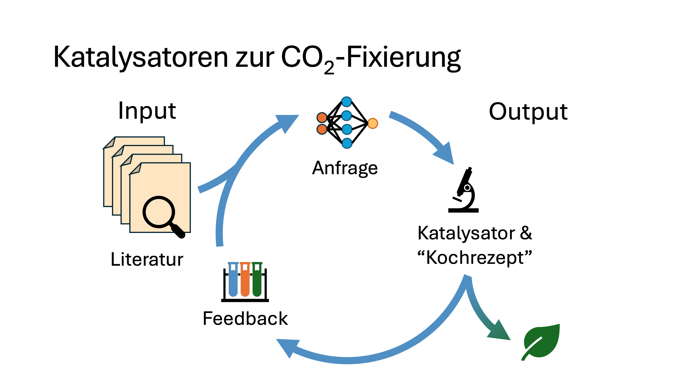

The Annual “Thanks Giving” Event by the ETH Foundation features young researchers and entrepreneurs who present their work in front of the donors. I had the honor to be invited to the 2024 edition and share some of my current research. A transcript of my talk.
Good evening, ladies and gentlemen. It is a great pleasure for me to share some of my research and passion, digital chemistry, with you today.
 Matterhorn bei Nacht. Bild von Explore with Joshua auf Unsplash.
Matterhorn bei Nacht. Bild von Explore with Joshua auf Unsplash.
Chemistry as we know it is an incredibly vast field that reaches into every area of our lives. We’re talking everything from the development of new medicines and renewable energy to materials for electronics, which allows me to project this presentation in front of you. There is also an enormous number of possible materials and molecules that we can produce: Imagine that the universe of chemistry is as vast as the night sky above us. There are many more stars than we could ever count!

There are an estimated 10^60 small organic molecules that we could theoretically make. That’s a 1 with 60 zeros. That’s as many molecules as there are grains of sand on Earth… multiplied by the number of planets in the known universe. However, we have only discovered or produced a tiny fraction of these immeasurable possibilities!

In view of the current global challenges that chemistry plays a central role in solving, we need to find a way to locate the most promising galaxies and stars in order to find the most active catalyst or the best chemical process - and that requires digital chemistry!

Traditional chemistry as we know it is often tedious and resource-intensive. Researchers have an idea, formulate a hypothesis that is tested with an experimental setup, a result is obtained and the data is extracted. Very often, assumptions are made based on chemical intuition, hypotheses are refined and the loop is started again. And that has got us very far so far! However, it has also turned out that this is not the most efficient way to make optimal use of the collected data…
This is where digital chemistry comes into play - based on the developments in algorithms, models and increased computing power, it uses machine learning, among other things, to quickly and efficiently gain new insights and solve chemical problems from an “ocean” of data from the lab & literature.

One way of using this artificial intelligence is language models, also known as large language models. They have become particularly well known through models such as ChatGPT, which have attracted global attention in the last year and a half. These models are not only finding their way into chats, but also into the natural sciences and engineering.
Chemistry can be understood as a language! In the broadest sense, language models process and generate text, for example in the translation of texts, as shown above from French into German (slides all in German, sorry!). In chemistry, here translated into molecules, language models can be trained to translate the starting materials into products, to predict the reaction products.
An atom is like a letter, a molecule like a word, and a reaction like a whole sentence. The input are the starting materials, or the request, of a user, the output are the products. These models have been trained on a gigantic corpus of text and chemical data, allowing us to extrapolate to new data and find new molecules.

In my current research, I am also working on the use of language models for the development of catalysts for the fixation of carbon dioxide, i.e. CO2. With the help of efficient catalysts, we could convert CO2 from our air into valuable chemicals that we need for our everyday lives and fuels; something that is essential for creating a circular economy.
There exists a class of atomic catalysts (single atom catalysts) that consists of sophisticated combinations of metals, support materials and ligands. Discovering new such catalysts is a combinatorial challenge! This is why we use Digital Chemistry.
We take advantage of the fact that extensive data has already been collected over several decades in the form of scientific publications. Using a language model, we sift through several thousand of them - more than a human could ever read - and extract information.
In this case, our input (see loop above) is the request to produce a catalyst with (certain properties). For example, we want to use cheaper and more abundant metals, a specific carrier material or reaction conditions that are as mild as possible. In addition, the model is fed with a huge body of literature. The output is a recipe (synthesis procedure) for the production of such a catalyst.
We give this recipe to experimental collaborators at ETH Zurich, who carry out the experiment and provide us with data to feed the language model. We use optimization algorithms to find the next best catalyst, thereby minimizing the number of necessary steps and iteratively increasing the efficiency of the process.

A central, if not the biggest challenge of our research is the evaluation of the models for reliability and their generalizability to unknown problems. Anyone who has used ChatGPT knows that a language model always gives an answer that sounds convincing. The question is, how much can we trust this output? Can these models be reliable scientific tools? How can we be sure that the suggestions are not only theoretically but also practically useful? To address this aspect, I am currently working on a gold standard (benchmark), a dataset that will be used to identify the weaknesses of these language models. It is crucial to recognize the potential but also the risks of these technologies and to handle them responsibly.
I have given you a small insight into my research, which is emblematic of how digital chemistry can be used to optimize development processes. It has the potential to purposefully explore this gigantic universe of chemicals! This is important in order to discover cost-effective and sustainable materials. The field stands for a synergy of disciplines, between expert knowledge, algorithms and data.
I look forward to continuing this enriching work and thank my collaborators and you for supporting me with the ESOP Excellence Scholarship. With this in mind: Ad Astra!

Photo Credits to ETH Foundation / Alessandro Della Bella. Special thanks to all my collaborators inside and outside ETH Zurich: Kjell Jorner (ETHZ), Stefan Schmid (ETHZ), Vignesh Somnath (ETHZ), Antonio Togni (ETHZ), Zachariah J. Berkson (University of Arizona), Christophe Copéret (ETHZ), Benedikt Winter (ETHZ), André Bardow (ETHZ), Manu Suvarna (ETHZ), Javier Pérez-Ramírez (ETHZ), Andres M Bran (EPFL), Geemi Wellawatte (EPFL), Anna Borisova (EPFL), Bojana Rankovic (EPFL), Philippe Schwaller (EPFL).
Subscribe here to stay updated on coming posts.